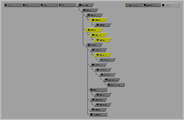
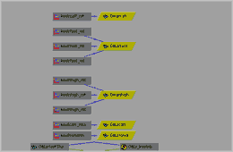
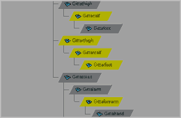

toggleHyperGraph
Toggles the HyperGraph under the mouse pointer between DG and DAG mode. If any nodes are selected, those nodes are framed within the window. If nothing is selected, the scene heirarchy is framed within the window.
Note: If no items are selected and the HyperGraph is in DAG mode, then no action will be taken; this would simply result in an empty window.
The most likely use of this script would be to assign it to a hotkey. Hover the mouse over the target HyperGraph (it does not need to have active focus) and hit the hotkey.
Here's a few screenshots of toggleHyperGraph in action:
|
An unsuspecting HyperGraph  |
|
|
Framed to DG mode  |
Framed to DAG mode  |